Development of the Female Reproductive Tract
- Every embryo starts the same (the indifferent stage). SRY on the Y makes testis-determining factor (TDF). TDF present → male. No TDF → the default female pathway.
- Everyone makes two pairs of ducts. In females, no testosterone → the mesonephric (Wolffian) ducts fade to remnants (Gartner's duct and friends), and no AMH → the paramesonephric (Müllerian) ducts grow into the tubes, uterus, cervix and upper 1/3 of the vagina.
- The lower vagina comes from the sinovaginal bulbs → vaginal plate → hollows out (canalization). The hymen is the thin plate left at the bottom.
- Primary oocytes are made before birth and freeze in prophase of meiosis I until just before ovulation. No new oogonia after birth.
- Anomalies: bicornuate, septate, didelphys and unicornuate uteri (fusion or regression failures, seen on HSG). Obstruction (transverse vaginal septum, imperforate hymen, the most common) gives hematometrocolpos: a uterus and vagina full of trapped blood.
What This Lecture Covers
- The indifferent stage of sexual development, and the switch that sends an embryo down the female pathway.
- How the ovary forms, and why the egg supply is fixed at birth.
- The fate of the mesonephric and paramesonephric ducts in females, and how the uterus and vagina form.
- How the ovaries descend, and how the external genitalia differentiate.
- The congenital anomalies that follow when each step fails.
Dr. Martin's module. The male pathway was covered in P1 with the urinary system. What goes wrong when the hormones are abnormal (CAH, androgen insensitivity) is 3.9 Disorders of Sex Development. The very first weeks of the embryo are in 2.7.
The Indifferent Stage
Weeks 4–7. Male and female embryos look identical, and both have everything needed to go either way.
The Switch: SRY and TDF
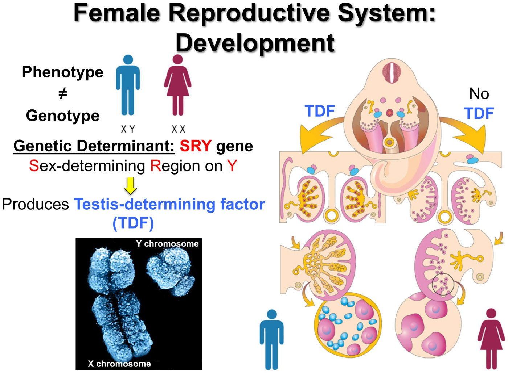
The Urogenital Ridge and the Gonad
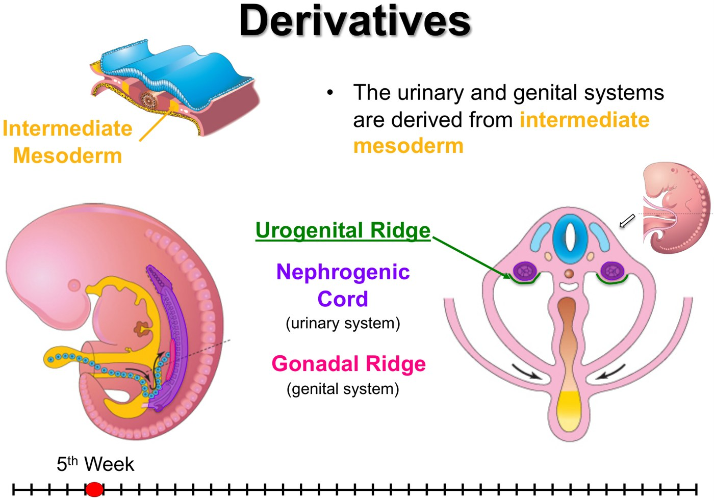
Week 5. Intermediate mesoderm bulges into the urogenital ridge beside the aorta. It splits into the nephrogenic cord (kidneys) and the gonadal ridge (gonads). Urinary and genital systems grow up side by side.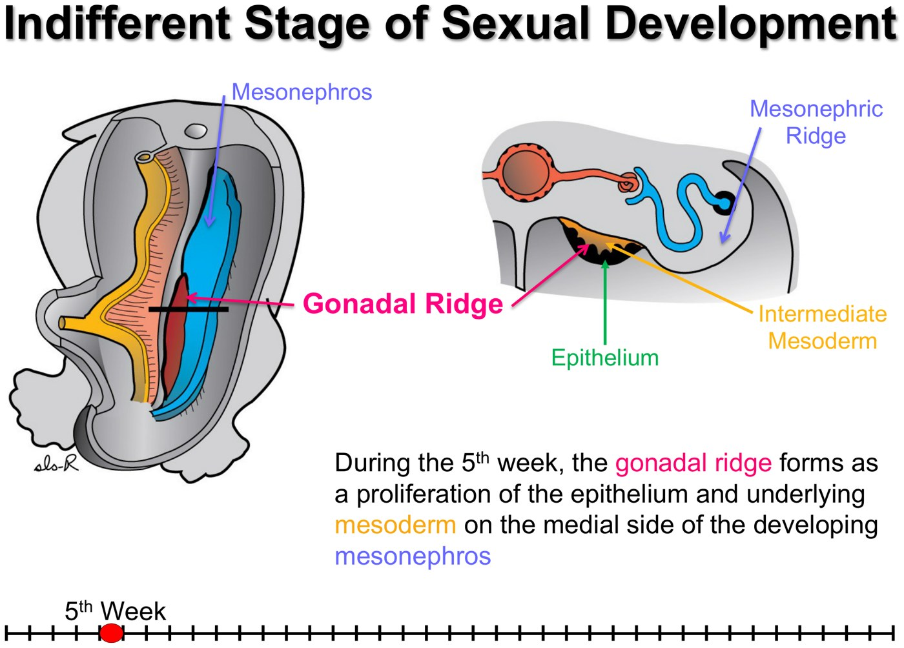
The gonadal ridge = thickened epithelium plus mesoderm on the medial side of the mesonephros (the temporary middle kidney).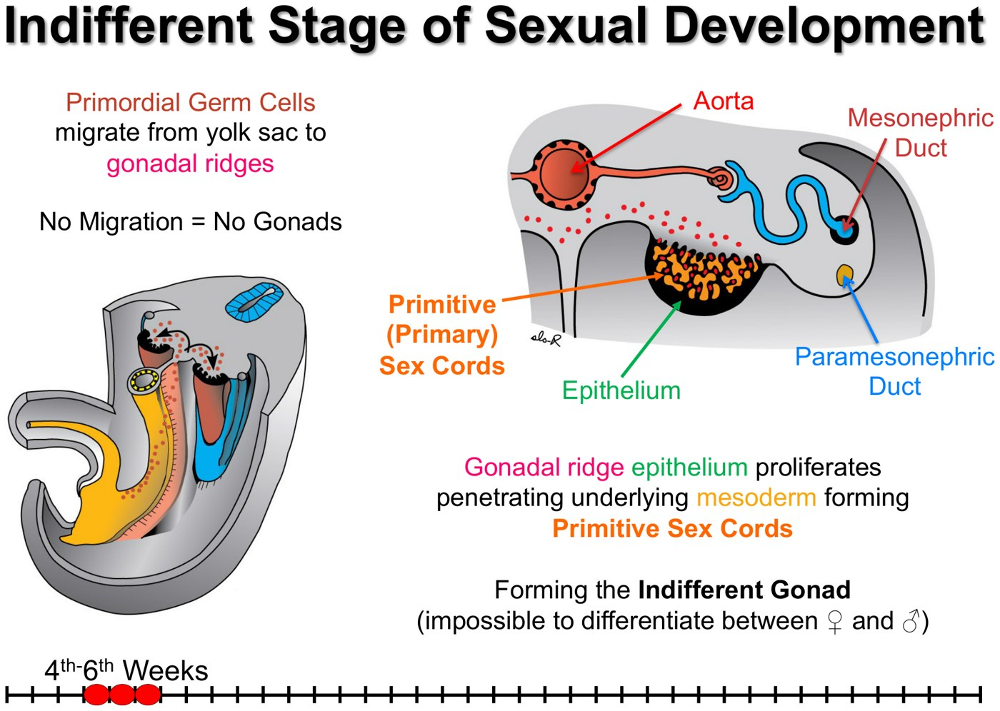
Two Pairs of Ducts in Everyone
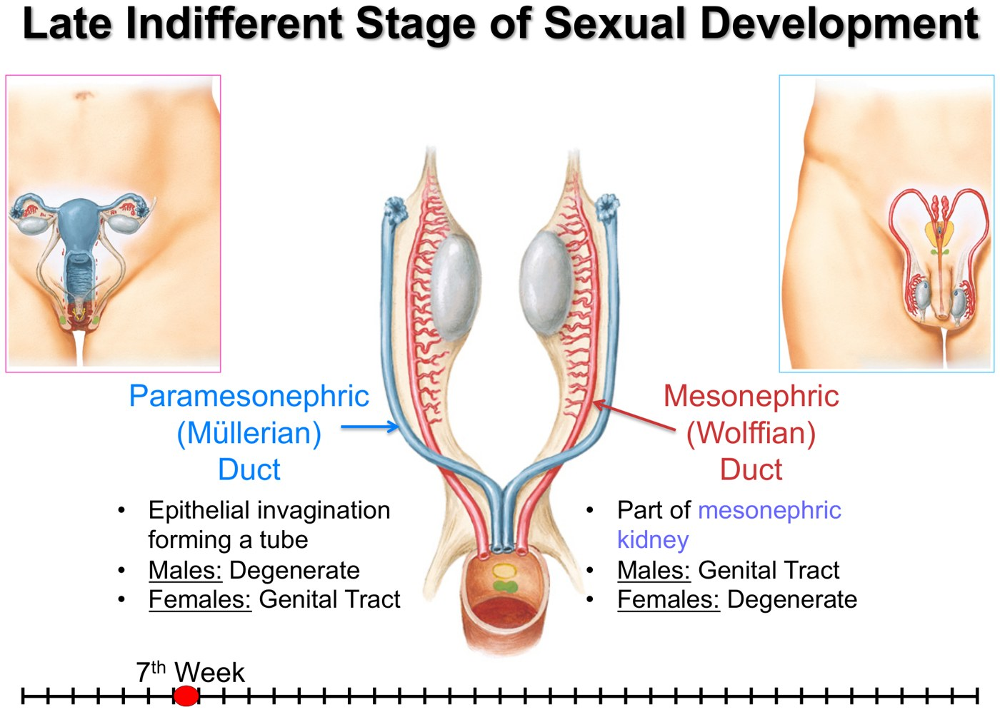
| Duct | Kept by | Removed by | Female fate |
|---|---|---|---|
| Mesonephric (Wolffian) | Testosterone | No testosterone | Degenerates, leaving small remnants |
| Paramesonephric (Müllerian) | No AMH | Anti-Müllerian hormone (AMH) | Develops: tubes, uterus, cervix, upper vagina |
The female pattern needs the absence of two male signals: no testosterone and no AMH. That is why a problem in making or sensing those hormones shows up as a disorder of sex development in 3.9.
Down the Female Pathway
From the indifferent stage to an ovary, a uterus, a vagina and a vulva.
The Ovary
![Slide titled Development of the Ovaries, with illustrations at the 7th week and 5th month. In the absence of testis determining factor, primitive sex cords degenerate; surface epithelium of the gonad gives rise to the cortical cords; primordial germ cells differentiate into oogonia, which undergo active mitosis to form primary oocytes; cortical cords proliferate and surround the primary oocytes, differentiating into follicular cells; primary oocytes plus follicular cells equal primordial follicles. Boxed: primary oocytes are arrested in prophase of meiosis I; no oogonia form postnatally.](../../../../assets/images/week-3/female-tract-development/ovary-development.jpg) Week 7 without TDF: the primary sex cords degenerate, and the surface epithelium makes new cortical cords instead. Germ cells → oogonia → (mitosis) → primary oocytes. Cortical cord cells wrap each one as follicular cells: a primordial follicle.
Week 7 without TDF: the primary sex cords degenerate, and the surface epithelium makes new cortical cords instead. Germ cells → oogonia → (mitosis) → primary oocytes. Cortical cord cells wrap each one as follicular cells: a primordial follicle.
- Primary sex cords break down (in a male they would become testis cords).
- Surface epithelium keeps growing between the germ cells: cortical cords.
- Germ cells become oogonia, which divide by mitosis into primary oocytes.
- Cortical cord cells surround each oocyte as follicular cells.
- Oocyte + follicular cells = primordial follicle.
Primary oocytes arrest in prophase of meiosis I and stay there until shortly before ovulation, which can be 50 years later. No new oogonia form after birth, so the supply is fixed. Males make new sperm continuously from puberty onward.
Watch the numbers between lectures. This lecture says the ovaries hold about 400,000 primordial follicles at birth. The physiology lecture's graph (3.3) shows about 2 million at birth, falling to about 400,000 by puberty, and most textbooks agree with it. The concept both lectures share: a fixed, shrinking supply with no new eggs after birth. If a question quotes a number, match it to the lecture it came from.
What's Left of the Mesonephric (Wolffian) Duct
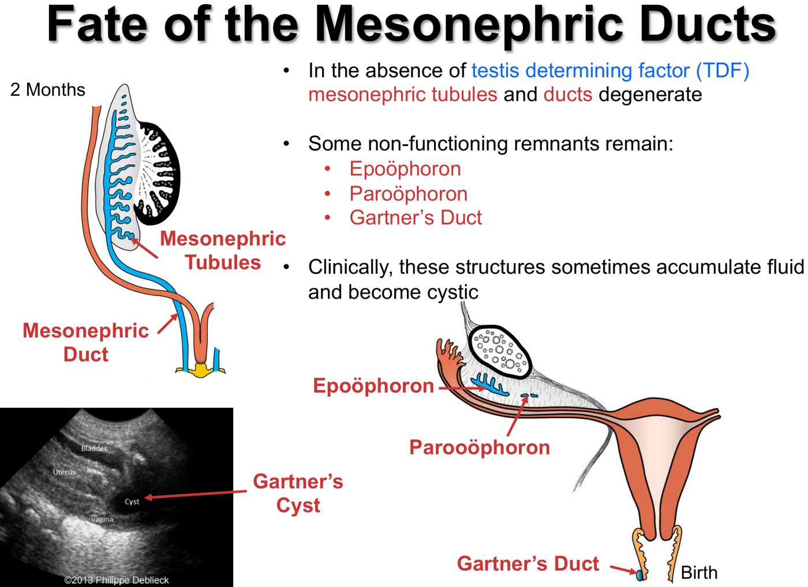
| Remnant | What it would have been in a male | Where it sits |
|---|---|---|
| Epoophoron | Efferent ductules and duct of the epididymis | In the mesovarium |
| Paroophoron | Leftover mesonephric tubules | In the mesovarium, closer to the uterus |
| Gartner's duct | Ductus deferens and ejaculatory duct | Along the side wall of the uterus (in the mesometrium) and in the vaginal wall |
Clinical: these cysts are usually asymptomatic. When they aren't, they can cause infection, bladder dysfunction, abdominal pain, vaginal discharge or urinary incontinence. For example, an inflamed Gartner's duct cyst can press on the bladder neck.
The Paramesonephric (Müllerian) Ducts Build the Tract
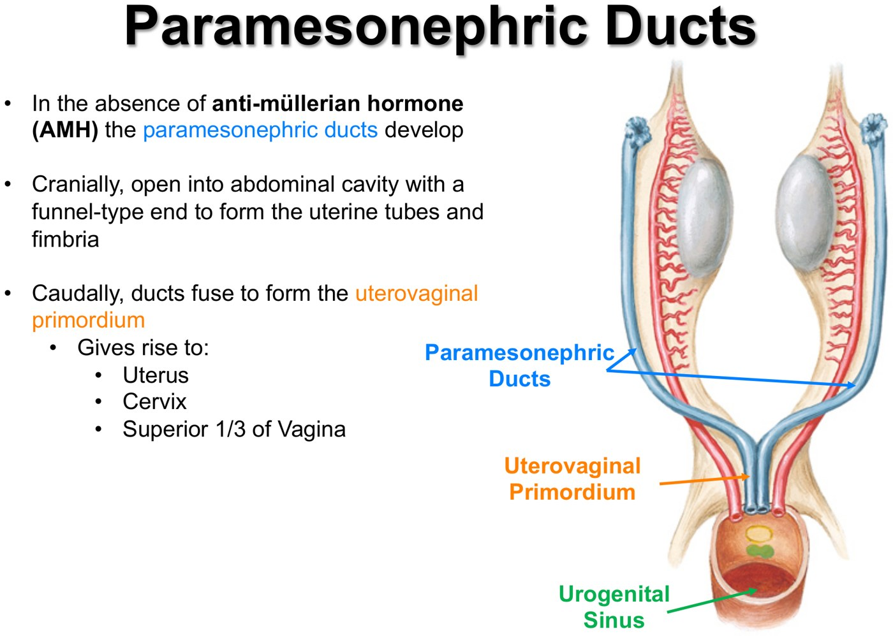
No AMH, so the ducts grow. Top ends stay separate and open into the abdomen: uterine tubes and fimbriae. Bottom ends fuse into the uterovaginal primordium: uterus, cervix and upper 1/3 of the vagina.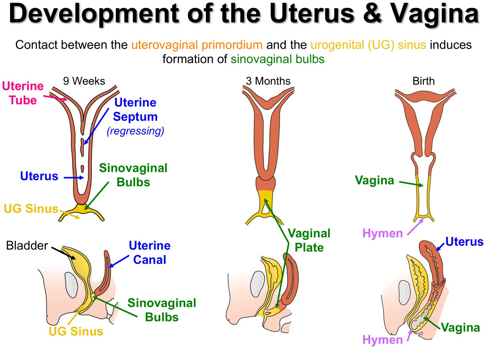
Building the vagina. The fused ducts touch the urogenital sinus, which then sprouts the sinovaginal bulbs. These fuse into a solid vaginal plate that later hollows out. The uterine septum between the two fused ducts regresses, leaving one cavity.| Step | Result | If it fails |
|---|---|---|
| Cranial ends stay separate and open | Uterine tubes with fimbriae | — |
| Caudal ends fuse | Uterovaginal primordium → uterus, cervix, upper 1/3 vagina | Bicornuate or didelphys uterus |
| The septum between them regresses | One uterine cavity | Septate uterus |
| Uterovaginal primordium contacts the UG sinus → sinovaginal bulbs → vaginal plate | Lower 2/3 of the vagina | — |
| The plate's centre breaks down (canalization) | Vaginal lumen | Transverse vaginal septum |
| The thin plate at the bottom perforates | The hymen, usually open around birth | Imperforate hymen |
Descent of the Ovaries
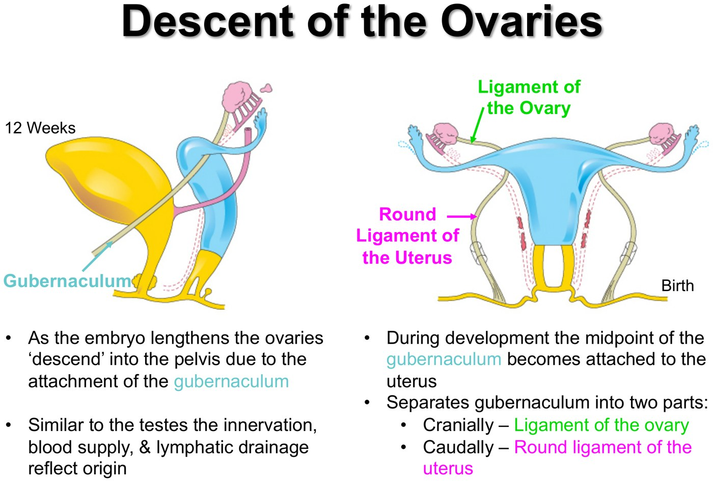
- Round ligament route: uterus → deep inguinal ring → inguinal canal → superficial ring → labia majora (the scrotum homologue). It is the same path the testis takes.
- High origin explains the adult anatomy in 3.6: the ovarian artery comes off the aorta, and ovarian lymph drains to lumbar/pre-aortic nodes.
The External Genitalia
First, a note on age
| Term | Counts from | Used by |
|---|---|---|
| Embryonic age | Conception | Embryology (this lecture) |
| Gestational age | First day of the last menstrual period | Clinicians and ultrasound |
Conception is usually about 2 weeks after the period starts, so gestational age = embryonic age + 2 weeks.
- Weeks 4–7: both sexes look identical.
- About 12 weeks (embryonic): distinctly male or female.
- Ultrasound: sex can usually be called from 14 weeks gestational (12 embryonic), but sonographers prefer to wait for the 18–20-week anatomy scan to be sure.
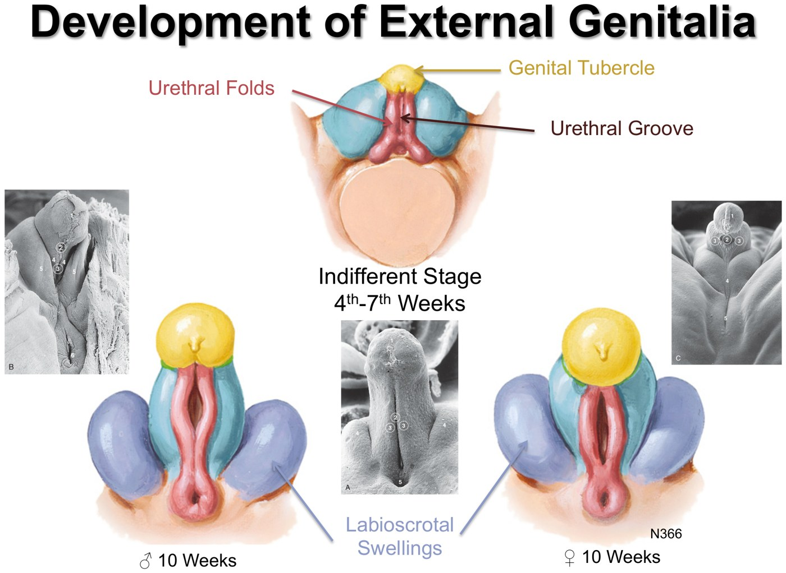
Indifferent stage (weeks 4–7): mesoderm around the cloacal membrane forms the genital tubercle (front; lengthens into a phallus in both sexes), the urethral (urogenital) folds either side of the urethral groove, and the labioscrotal swellings outside them. At 10 weeks the sexes still look alike.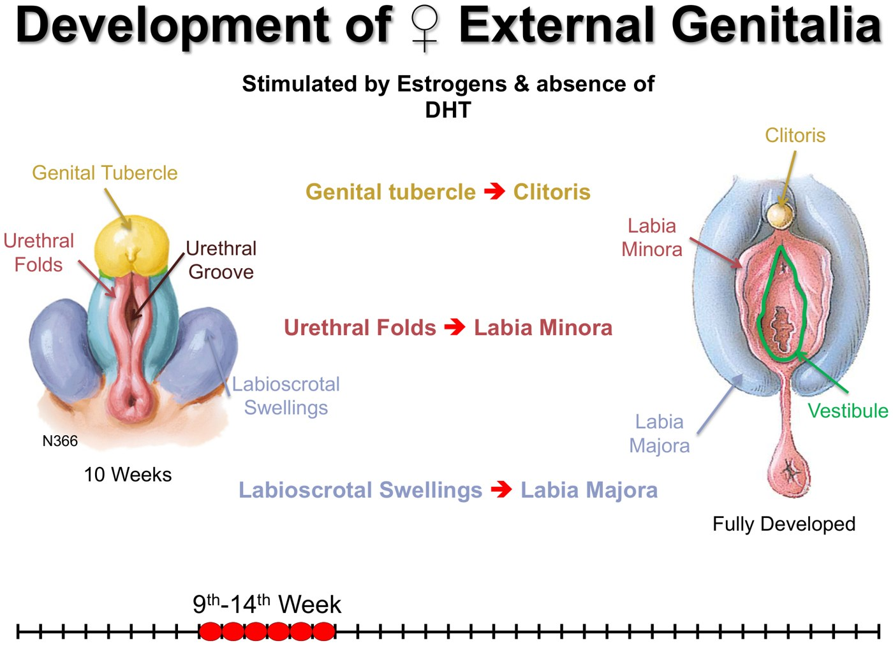
Female (estrogen, no DHT): genital tubercle → clitoris · urethral folds → labia minora · labioscrotal swellings → labia majora. The urogenital membrane breaks down around week 7 to open the vestibule.| Indifferent structure | Female | Male |
|---|---|---|
| Genital tubercle | Clitoris (grows only a little) | Penis (grows a lot) |
| Urethral folds | Labia minora: stay separate | Fuse ("zip up") in the midline to enclose the penile urethra; the seam is the raphe |
| Labioscrotal swellings | Labia majora | Scrotum |
| Gubernaculum | Ligament of the ovary + round ligament | Pulls the testis into the scrotum |
When It Goes Wrong: Congenital Anomalies
Each anomaly is one of the steps above failing. If you know the step, you know the anomaly.
Müllerian (Uterine) Anomalies
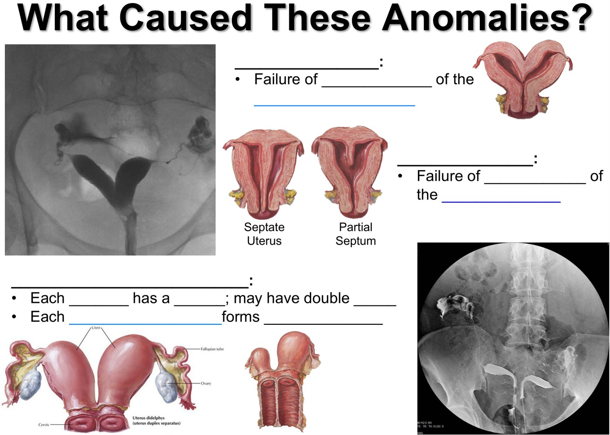
| Anomaly | Failure of | What you see |
|---|---|---|
| Bicornuate uterus | Complete fusion: caudal parts fuse, cranial parts don't | Two horns, heart shape, each with its own fundus |
| Septate uterus | The septum to regress (complete or partial) | One outer shape, a wall inside. Less heart-shaped on HSG because the two cavities sit close together |
| Uterus didelphys | Fusion at all: the ducts develop independently | Two uteri, two cervices, one tube and ovary each (often one uterus is bigger). If the sinovaginal bulbs also form separately: a double vagina |
| Unicornuate uterus | One duct to develop at all | One horn and one tube; the tube can be patent |
Bicornuate and septate uteri are both linked to preterm birth. They look alike on HSG, which only shows the inside of the cavity; the outer contour (heart-shaped or not) is what separates them.
Obstruction: Hematometrocolpos
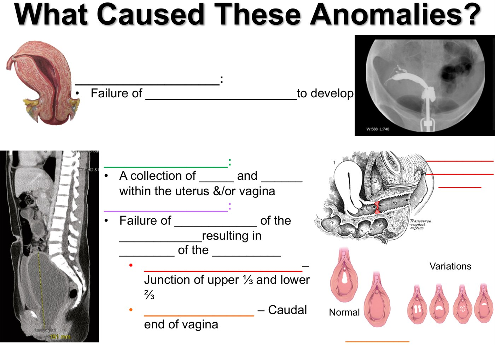
| Cause | Failure of | Where |
|---|---|---|
| Transverse vaginal septum | Canalization of the vaginal plate | Usually at the junction of the upper 1/3 and lower 2/3, where the uterovaginal primordium meets the part from the UG sinus |
| Imperforate hymen | The bottom of the vaginal plate to perforate | The vaginal opening. The most common obstructive anomaly of the female tract |
Both cause vaginal atresia: the outflow tract is blocked, so menstrual blood has nowhere to go. It collects in the vagina (colpos) and uterus (metra): hemato-metro-colpos. Normal hymens vary a lot, from a small to a large opening, and usually perforate soon after birth.
Why Do Reproductive and Urinary Defects Travel Together?
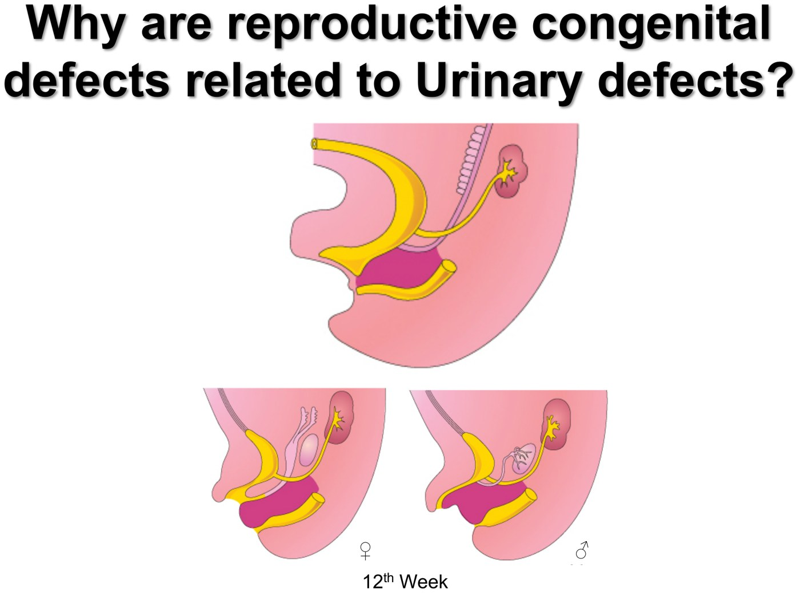
The lecture's closing question. It isn't answered in the recording; the answer is in the box.Both systems come from the same intermediate mesoderm and grow side by side in the urogenital ridge. More specifically, the mesonephric duct sprouts the ureteric bud, which becomes the ureter and collecting system of the kidney, and it also guides the paramesonephric duct as it grows down beside it.
So one faulty mesonephric duct can cost the kidney on that side and derail the Müllerian duct next to it. Renal anomalies turn up in a large share of Müllerian anomalies; renal agenesis is especially common with uterus didelphys and with a unicornuate uterus. So when you find one of these anomalies, image the kidneys. Added from outside the lecture: StatPearls, "Embryology, Wolffian Ducts"; Li et al., 2000 (renal agenesis in about 30% of Müllerian anomalies, most often with didelphys).
Built from Dr. Charys Martin's "Embryology of the Female Reproductive Tract" slides and her three recorded videos (review of the indifferent stage, development of the female tract, and the knowledge-check feedback on anomalies). All figures are slides from the deck; the two knowledge-check slides are shown with their blanks and answered in the tables. Added from outside the lecture and flagged: the answer to the deck's closing question on urinary–genital anomalies (mesonephric duct as the source of the ureteric bud and the guide for the Müllerian duct; renal agenesis with Müllerian anomalies, from StatPearls and Li et al., J Comput Assist Tomogr 2000;24:829–34, verified against the PubMed abstract). The difference between this lecture's follicle count and the physiology lecture's is noted rather than resolved. Related: 3.6 for the adult anatomy these structures become; 3.9 for disorders of the hormonal switches.